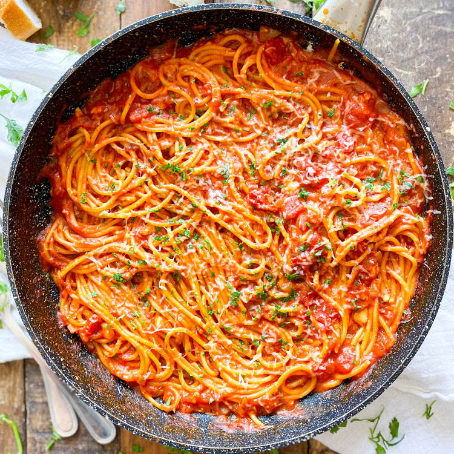

A relaxing and tasty spaghetti with tomato sauce
invented by yours truly
Ingredients
- 1 pound of spaghetti
- 1/4 cup of olive oil
- 1/4 cup of chopped garlic
- 1/4 cup of chopped tomatoes
- 1/4 cup of chopped basil
- 1/4 cup of chopped parsley
- 1/4 cup of chopped oregano
- 1/4 cup of chopped thyme
- 1/4 cup of chopped rosemary
- 1/4 cup of chopped sage
- 1/4 cup of chopped chives
- 1/4 cup of chopped mint
- 1/4 cup of chopped cilantro
- 1/4 cup of chopped parsley
Instructions
- Boil water in a large pot
- Once the water is boiling, add the spaghetti and cook until al dente
- While the spaghetti is cooking, heat the olive oil in a large skillet over medium heat
- Add the garlic and cook until fragrant
- Add the tomatoes, basil, parsley, oregano, thyme, rosemary, sage, chives, mint, and cilantro to the skillet
- Cook until the tomatoes are soft and the herbs are fragrant
- Drain the spaghetti and add it to the skillet
- Toss the spaghetti with the tomato sauce until well coated
- Season with salt and pepper to taste
- Serve the spaghetti hot, garnished with parsley
Return to Top
Return to Main Page